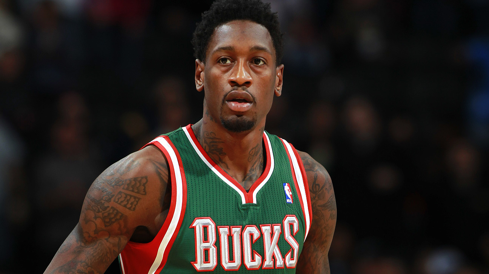
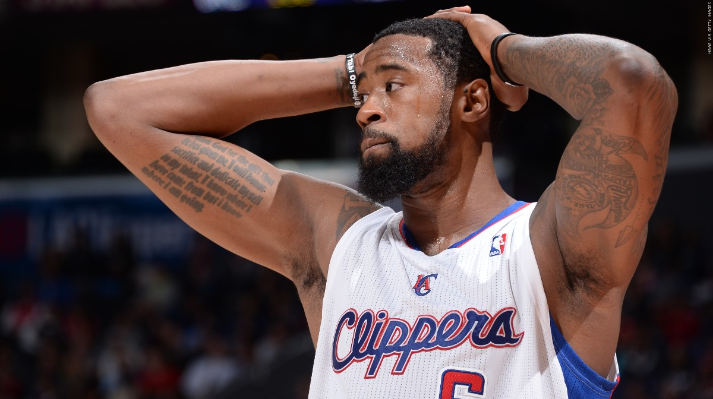
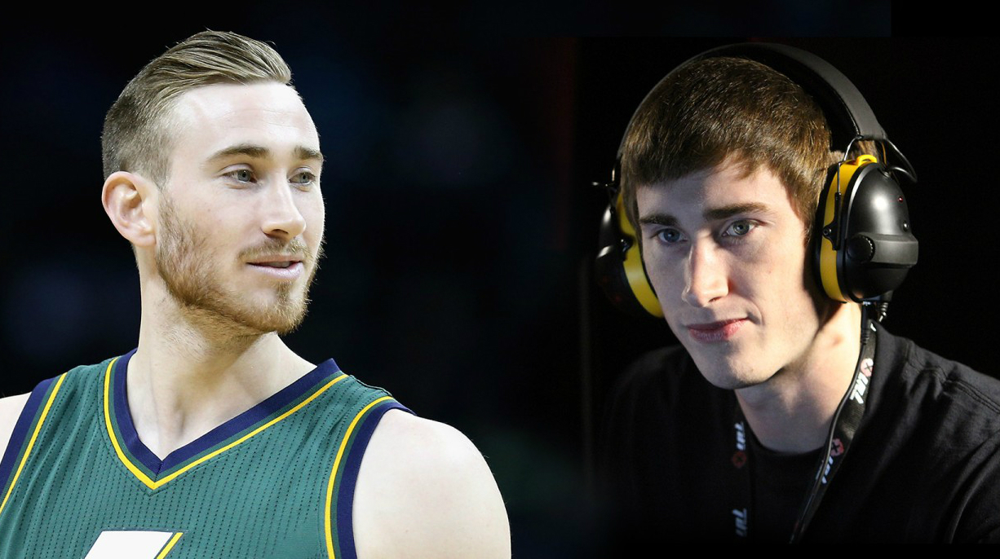
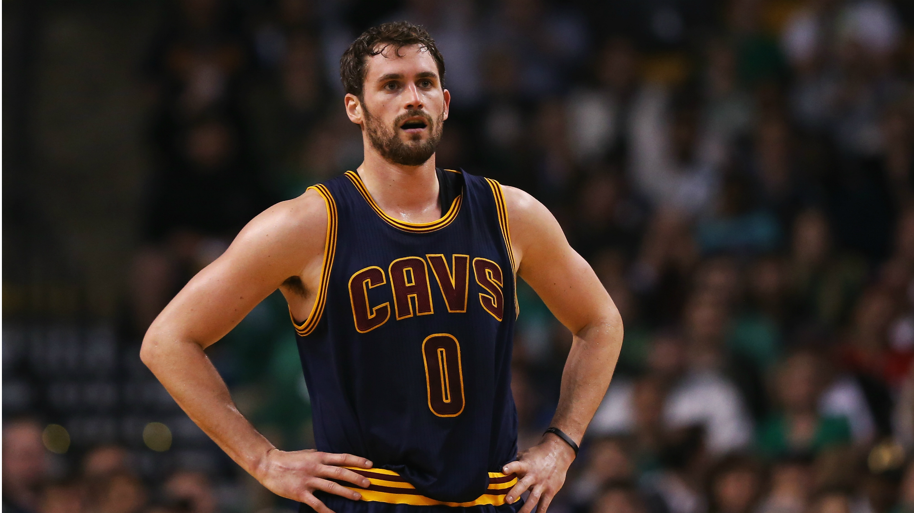
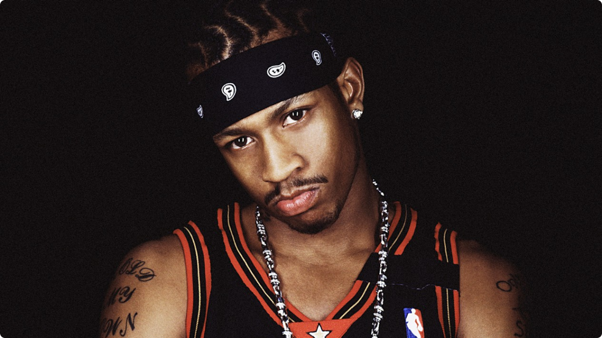
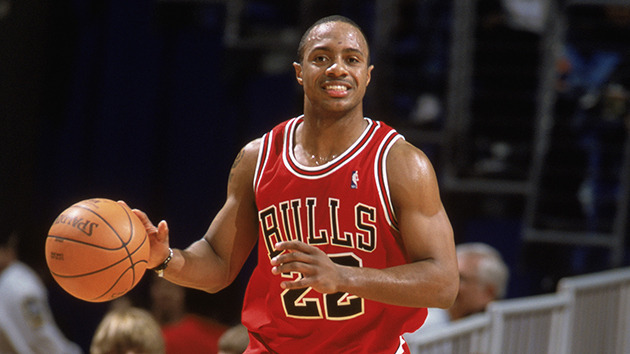
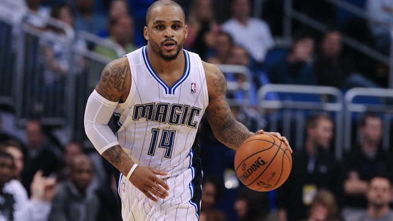
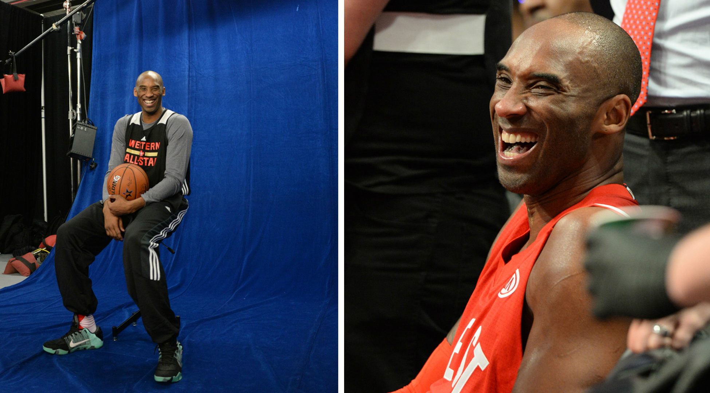
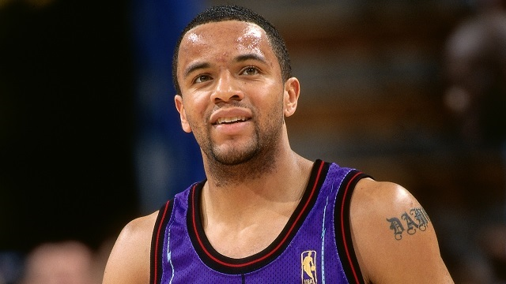

The Players Home
The Players HomeWillie Cauley-Stein | Trill: A Gallery
A lot of GMs have asked me why I changed my middle name to Trill.
Read moreLarry Sanders | Why I Walked Away From the NBA
I'm Larry Sanders, I'm a person. I'm a father. I'm an artist. I'm a writer. I'm a painter. I'm a musician. And sometimes I play basketball.
Read more DeAndre Jordan | Getting It Right
I woke up Monday morning feeling like there was something missing. Something that I didn't do- something that was not covered. And that's when I began to have second thoughts.
Read more Gordon Hayward | The Case for Gaming
Contra. Duck Hunt. Double Dragon. If these phrases elicit any sort of emotional response inside of you, we have something in common.
Read more Kevin Love | Chasing What You Love
Game 6, we ended up losing. I'm kind of standing up, everybody's going off the floor, and I'm looking down at the Golden State Warriors thinking, "Okay. Okay. I know this feeling."
Read more Allen Iverson | An Allen Iverson Thing
"Selfish". "Small". "Thug". "Evil". [Laughs]. Everybody's not going to love Allen Iverson. I always was basically judged from day one.
Read more Jay Williams | Double Standard
At the age of 21, I thought I was going to play basketball for the next 15 years of my life. I saw my path going this way. And then [snaps fingers], life changed.
Read more Jameer Nelson | The Takeover
It’s no secret that guards have taken over the NBA. Gone are the days when you had to have a dominant big man to win a championship.
Read more Kobe Bryant | Frames
Emotions. All weekend, people kept asking me about them. Am I sad? Am I nostalgic? Am I anxious?
Read more Damon Stoudamire | Letter to My Younger Self
Dear 12-year-old Dame, Listen to me. When the reporter comes to your locker with the empty cup, don’t freak out. Don’t curse. Don’t get offended. Don’t even react.
Read more 